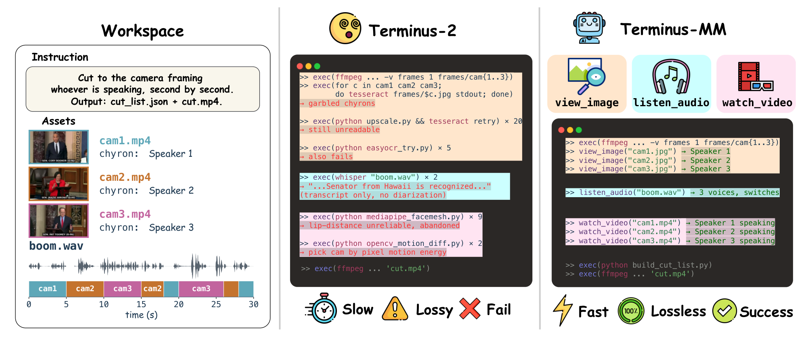

A Harbor-native benchmark of 105 tasks where terminal agents must understand audio, video, and image content and turn that evidence into verifier-checkable file artifacts.

Terminals provide a powerful interface for AI agents by exposing diverse tools for automating complex workflows, yet existing terminal-agent benchmarks largely focus on tasks grounded in text, code, and structured files. However, many real-world workflows require practitioners to work directly with audio and video files. Working with such multimedia files calls for terminal agents not only to understand multimedia content, but also to convert auditory and visual evidence across related files into appropriate actions. To evaluate terminal agents on multimedia-file tasks, we introduce MultiMedia-TerminalBench (MMTB), a benchmark of 105 tasks across 5 meta-categories where terminal agents directly operate with audio and video files. Alongside MMTB, we propose Terminus-MM, a multimedia harness that extends Terminus-KIRA with audio and video perception for terminal agents. Together, MMTB and Terminus-MM support a controlled study of multimedia terminal agents, revealing how different forms of multimedia access shape task outcomes and determine which evidence agents rely on to construct executable terminal workflows.
Across 105 tasks, the gap between native multimedia perception and conversion-tool workflows is substantial. Terminus-MM with Gemini 3.1 Pro reaches the highest binary success rate (37.1%) and partial credit (46.9%), outperforming both the text-only baseline on the same backbone and Codex CLI with GPT 5.2 on the same task suite.
| Harness | Backbone | Tools | Binary ↑ | Partial ↑ |
|---|---|---|---|---|
| Terminus-2 | Gemini-3.1-Pro | text only | 0.124 | 0.162 |
| Terminus-KIRA | Gemini-3.1-Pro | + image | 0.105 | 0.159 |
| Terminus-A | Gemini-3.1-Pro | + audio | 0.257 | 0.349 |
| Terminus-IA | Gemini-3.1-Pro | + image + audio | 0.333 | 0.406 |
| Terminus-IV | Gemini-3.1-Pro | + image + video | 0.333 | 0.432 |
| Terminus-MM | Gemini-3.1-Pro | + image + audio + video | 0.371 | 0.469 |
| Claude Code | Sonnet-4.6 | + image | 0.162 | 0.186 |
| Codex CLI | GPT-5.2 | + image | 0.162 | 0.202 |
Mean over 105 tasks. Binary = verifier-passing artifact match. Partial = task-specific partial-credit score. See the paper for cost, latency, modality-masking, and per-category breakdowns.
MMTB tasks each hand the agent a working directory of image, audio, or video files and require a checkable
artifact: a selected file, a timestamped segment, a structured JSON or CSV record, an edit list, or a processed
media clip. Tasks are designed so that a typical
ffprobe → ffmpeg → frame/ASR → output shell pipeline cannot reach the right answer without
genuine cross-modal perception. The 105 tasks span five meta-categories: media production,
performance & coaching, enterprise & compliance, personal & education, and operations & research.
@misc{mmtb2026,
title = {MultiMedia-TerminalBench: A Benchmark for Terminal Agents with Multimedia Perception},
author = {Heo, Chiyeong and Kim, Jaechang and Kwon, Junhyuk and Kim, Hoyoung and Park, Dongmin and Lee, Jonghyun and Ok, Jungseul},
year = {2026},
eprint = {XXXX.XXXXX},
archivePrefix = {arXiv},
primaryClass = {cs.CL},
note = {arXiv preprint, URL TBA}
}